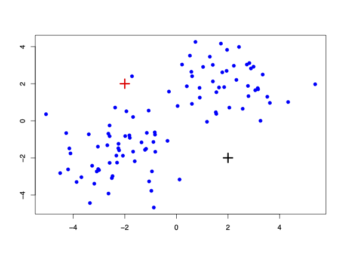

Machine learning is the act of discovering and patterns buried in large data sets.
The majority of practical machine learning uses supervised learning.
Supervised learning is where you have input variables (x) and an output variable (y) and you use an algorithm to learn how the input relates to the output.
\[y = f(x)\]
The goal is to approximate the mapping function so well that when you have new input data (x) that you can predict the output variables (y) for that data.
It is called supervised learning because the process of an algorithm learning from the training dataset can be thought of as a teacher supervising the learning process. We know the correct answers, the algorithm iteratively makes predictions on the “training” data and is corrected by the teacher. Learning stops when the algorithm achieves an acceptable level of performance.
Supervised learning problems can be further grouped into regression and classification problems:
Regression: A regression problem is when the output variable is a real value, such as “dollars” or “weight”.
Classification: A classification problem is when the output variable is a category, such as “red” or “blue” or “disease” and “no disease”.
We saw these supervised learning methods in the predictive analytics section.
Supervised Learning - Regression
US Department of Health and Human Services, Centers for Disease Control and Prevention collect information on births recorded in the country. We have data which are a random sample of 1,000 births from 2014. Variables of interest include length of pregnancy in weeks (weeks), mother’s age in years (mage), the sex of the baby (sex), smoking status of the mother (habit), and the number of hospital (visits) visits during pregnancy.
births14
# A tibble: 1,000 × 13
fage mage mature weeks premie visits gained weight lowbirthweight sex
<int> <dbl> <chr> <dbl> <chr> <dbl> <dbl> <dbl> <chr> <chr>
1 34 34 younger m… 37 full … 14 28 6.96 not low male
2 36 31 younger m… 41 full … 12 41 8.86 not low fema…
3 37 36 mature mom 37 full … 10 28 7.51 not low fema…
4 NA 16 younger m… 38 full … NA 29 6.19 not low male
5 32 31 younger m… 36 premie 12 48 6.75 not low fema…
6 32 26 younger m… 39 full … 14 45 6.69 not low fema…
7 37 36 mature mom 36 premie 10 20 6.13 not low fema…
8 29 24 younger m… 40 full … 13 65 6.74 not low male
9 30 32 younger m… 39 full … 15 25 8.94 not low fema…
10 29 26 younger m… 39 full … 11 22 9.12 not low male
# ℹ 990 more rows
# ℹ 3 more variables: habit <chr>, marital <chr>, whitemom <chr>
Split the data
library(rsample)# Fix random numbers by setting the seed set.seed(1116)# Put 80% of the data into the training set births_split <-initial_split(births14, prop =0.80)# Create data frames for the two sets:train_data <-training(births_split)test_data <-testing(births_split)
Fit the model and “learn” from the training data
Let’s explore a multiple regression option
lm_model_train <-lm(weight ~ weeks + mage + sex + habit + visits, data = train_data)
Evaluate the performance on the test data
births_res_test <- test_data %>%select(weight) %>%mutate(pred_weight =predict(lm_model_train, test_data))ggplot(births_res_test, aes(x = weight, y = pred_weight)) +geom_point() +geom_line(aes(x = weight, y = weight))
Warning: Removed 16 rows containing missing values or values outside the scale range
(`geom_point()`).
# A tibble: 1 × 2
mean_error mean_abs_error
<dbl> <dbl>
1 NA NA
The model is trying to “learn” about the relationship between the price of a painting and other painting attributes. If the model does a good job at “learning” then knowing various painting attributes/features can predict what their price will be. This is a supervised learning method because the accuracy of the model’s predictive performance can be evaluated.
Supervised Learning - Classification
We saw examples of using logistic regression previously. Let’s consider another example here. The ‘Cryotherapy’ dataset gives the results of a cryotherapy procedure (1 = successful, 0 = unsuccesful). In this case, our outcome of interest is the success category — it is what we want to predict.
Let’s fit a logistic regression model using the Time spent doing the procedure to predict the success:
logistic_model <-glm(Result ~ Time, family ="binomial", data = train_data)logistic_model
Call: glm(formula = Result ~ Time, family = "binomial", data = train_data)
Coefficients:
(Intercept) Time
7.5598 -0.8738
Degrees of Freedom: 71 Total (i.e. Null); 70 Residual
Null Deviance: 98.42
Residual Deviance: 49.57 AIC: 53.57
Let’s visualise the results of fitting the logistic regression:
ggplot(train_data, aes(x = Time, y = Result))+geom_point() +geom_smooth(method ="glm", method.args =list(family ="binomial"),se =FALSE)
`geom_smooth()` using formula = 'y ~ x'
Let’s see if the model does a good job at predicting the success:
The model has “learned” about the relationship between time spend on the procedure and its success. As a result, the company can predict what their success will be for a given time. The company can provide recommendations for the length of time a patient should undergo the procedure, for example, if the produce takes 10 minutes it’s more likely to be unsuccessful. This is a supervised learning method and therefore the company can also evaluate the accuracy of the model’s predictive performance.
Unsupervised learning
Unlike supervised learning, unsupervised learning develops insights with unlabeled data. As a result, there is no evaluation of the accuracy of the model.
An unsupervised learning algorithm analyzes a set of data, groups data points based on perceived similarities and derives conclusions from these similarities.
Types of Unsupervised Learning:
Unlike supervised learning which only had two main types, regression and classification, unsupervised learning has many methodologies and number of methods continues to grow with new discoveries. Below are some of the more common ones:
Clustering: Cluster analysis or clustering is the task of grouping a set of objects in such a way that objects in the same group (called a cluster) are more similar (in some sense or another) to each other than to those in other groups (clusters).
Anomaly Detection: Anomaly detection is the identification of items, events or observations which do not conform to an expected pattern or other items in a dataset.
Natural Language Processing: Natural Language Processing is a way for computers to analyze, understand, and derive meaning from human language in a smart and useful way. NLP uses machine learning to automatically learn patterns by analyzing a set of examples (collection of articles), and make an inference.
Unsupervised Learning - Clustering
We will introduce the concepts behind a popular clustering method called k-means clustering.
Goal: group the input samples together based on similarity. The distance between the samples in a cluster should be much smaller than the distance between the clusters
Example: Simulated Data
Can you see any possible clusters?
K-means clustering
The algorithm works by:
Assigning each sample to the closest “cluster centroid”
Moving each cluster centroid to be the mean of points that are assigned to it
Repeat.
K-means clustering: iteration 0a
Begin by randomly generating two centroids.

K-means clustering: iteration 0b
Assign each point to the nearest centroid
K-means clustering: iteration 1a
Update the centroids
K-means clustering: iteration 1b
Assign each point to the nearest centroid
K-means clustering: convergence
Repeat the process until points are no longer moved between groups
K-means clustering: results
Example: Old Faitful
The Old Faithful geyser is in Yellowstone National Park, Wyoming. - The geyser erupts frequently and it is a popular tourist destination.
The old faithful dataset contains waiting times between eruptions and the duration of the eruption. Can you see an possible clusters in the data?
Contrary to supervised learning where we have the ground truth to evaluate the model’s performance, clustering analysis doesn’t have a solid evaluation metric that we can use to evaluate the outcome of different clustering algorithms.
Moreover, since kmeans requires k as an input and doesn’t learn it from data, there is no right answer in terms of the number of clusters that we should have in any problem.
Sometimes domain knowledge and intuition may help but usually that is not the case.
In the cluster-predict methodology, we can evaluate how well the models are performing based on different metrics that may give us some intuition about k:
Elbow method
Silhouette analysis
Elbow method
The basic idea behind cluster methods, such as k-means clustering, is to define clusters such that the within-cluster variation (known as total within-cluster sum of squares) is minimized.
Thus, we can find the optimal clusters by visualising no. of clusters vs total within-cluster sum of squares
We look for the “elbow” in the plot to choose the no. of clusters
The silhouette approach measures the “quality” of a clustering, i.e., it determines how well each object lies within its cluster.
The silhouette value is a measure of how similar an object is to its own cluster (cohesion) compared to other clusters (separation).
The silhouette ranges from -1 to +1, where a high value indicates that the object is well matched to its own cluster and poorly matched to neighboring clusters
The average silhouette method computes the average silhouette of observations for different values of k.
The optimal number of clusters k is the one that maximizes the average silhouette over a range of possible values for k.